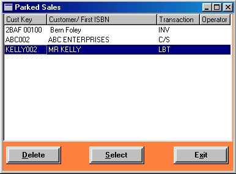

|
Parked sales
|
Top |
| · | Click on the Recall Parked button to open the Parked Sales window.
|

| · | The illustration shows that there are three parked transactions - an invoice, a cash sale and a layby.
|
| · | Highlight the transaction you require and click on the Select button. The transaction (including any discounting) will be copied into the browser and removed from parked sales. Then just process the transaction as usual.
|
| · | To delete a parked sale, highlight it and then click on the Delete button.
|